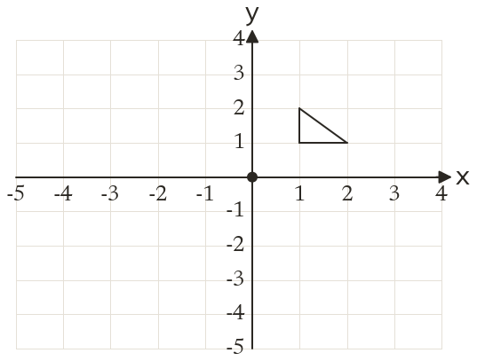
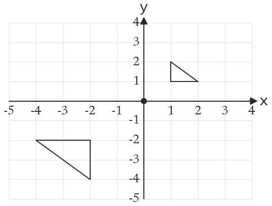

Westonbirt Maths · Transformations and Enlargements
Fractional and Negative Scale Factors
Name: ______________________ Date: ____________
1
Enlarge the triangle by scale factor centre Write down the corners of the image.
2
Enlarge the point by scale factor centre
3
Enlarge the point by scale factor centre
4
Enlarge the point by scale factor centre
5
A triangle with sides cm, cm and cm is enlarged by scale factor : find the sides of the image.
6
Which point is invariant under an enlargement by scale factor centre ?
Ext
An enlargement with scale factor maps to Find the centre.

